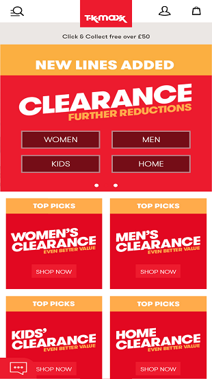

Repetition
Zolando website got my attention for the color repitition and few content display to capture user experience, the color is wide twice and taking a bit of space, gives the page a beautify views.
White Space and Clean design

The eBay page cannot be visible in the medium and mobile size, the fonts are too small ehile the images are bigger, it doesn't seeem to be a responsive website. White space has not been properly manage on the page and the content were all put together.
Alignment
I like the picture and line alignment for this webpage, it take to look great on the mobile view as well as in larger view. The white space are well manage and the important of alignment really speak volume in designing this webpage.